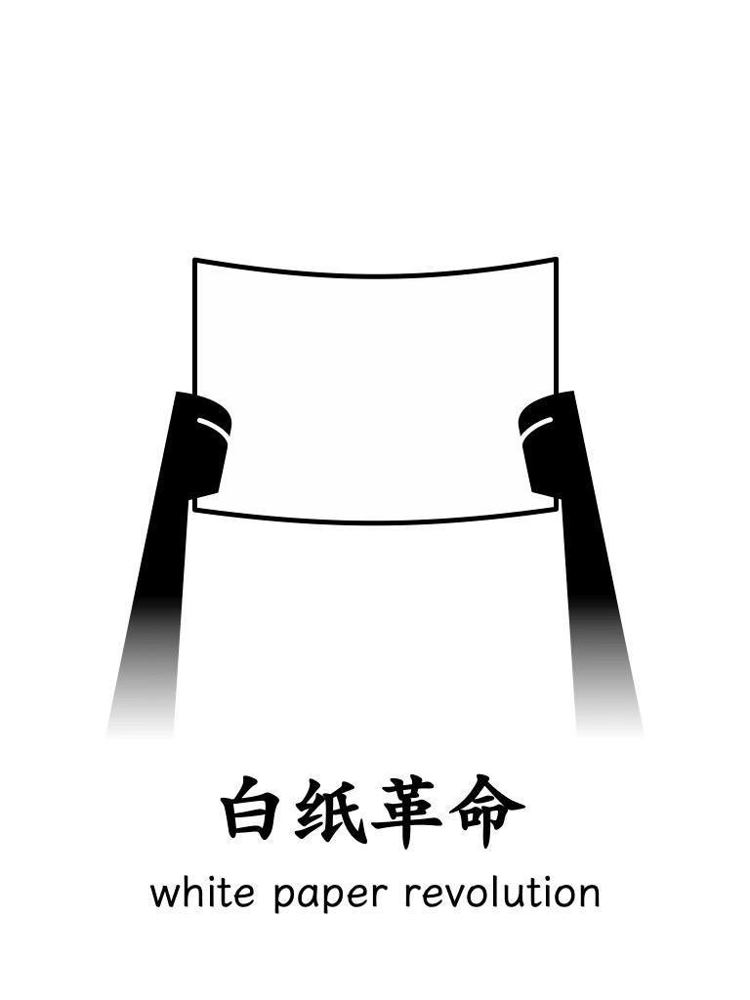

Some thoughts on the white paper revolution

On November 27th, Shanghai police arrested participants of the anti-lockdown protest. The officers rounded up dozens of protesters, including myself, and loaded them onto buses for detention.
At the police station, we were held for 24 hours, our cell phones were confiscated and their contents were searched. We were asked to write a letter of apology promising not to participate in further demonstrations. After the phone search, I reached out to my school counselor for assistance.
During our time at the police station, we were limited in our use of social media, and forced to take photos of ourselves holding up the chat logs on our phones and with our masks and hats removed.
As a human being, I feel that it is important to take a stand and not remain indifferent in the face of injustice. We may not be a revolutionary army, but we can still make our voices heard and do what we can within the limits of the law. Speaking out and raising awareness is crucial.
We may be aware of situations where our efforts seem inconsequential, but it is crucial that we act anyway. There may be others who are not aware of the situation and by raising our voices on social media, among our circle of friends, or offering condolences to those affected, we can contribute in our own small way.
Resistance starts with the small things in life. We may not possess great strength, but we can still make a difference by doing our jobs with integrity, speaking the truth as journalists, and providing warnings as doctors. The failure of people to maintain their conscience is a disappointment, but we can still save our own. The future may be uncertain, but at least we can say we did what we could.
Everything is interconnected, and the balance between safety and freedom must be gradually struck under the control of the Leviathan. The experience of Shanghai as a lockdown city has come to a close in the first half of this year, with a gradual easing of restrictions. At first, the measures were targeted at a specific group, and reactions were relatively calm, even supportive of the administration. But as the situation escalated and the government’s control became more stringent, people’s emotions began to boil. Political views changed, and eventually reached a point where I felt compelled to get involved.
My desire to resist stems from a long-held anger, which has been building up inside me. Growing up as a rebellious individual seeking freedom, I didn’t know what I was rebelling against or what freedom meant. Over the past two years, I’ve become increasingly aware of the injustice in the epidemic prevention policies and events in Hong Kong. This has helped me understand why people fight for freedom.
As a student, I never wanted to conform to the masses. My skepticism towards censored high school textbooks led me to construct my own value system from scratch, just as Descartes did in his “Meditations.” In college, the liberal arts education at Fudan University opened up a new world for me. Driven by my curiosity about the world and a desire to overcome the absurdity of my high school experience, I explored various electives in literature, philosophy, law, history, and art. I also read extensively in law, economics, and political science. Through this process, I discovered my long-lost childhood dream of architecture, which became the convergence of all my interests.
One of the truths that has become most clear to me in these years is that freedom, before it is a right, is an important and precious autonomous choice, and its only prerequisite is the willingness to bear the pain.